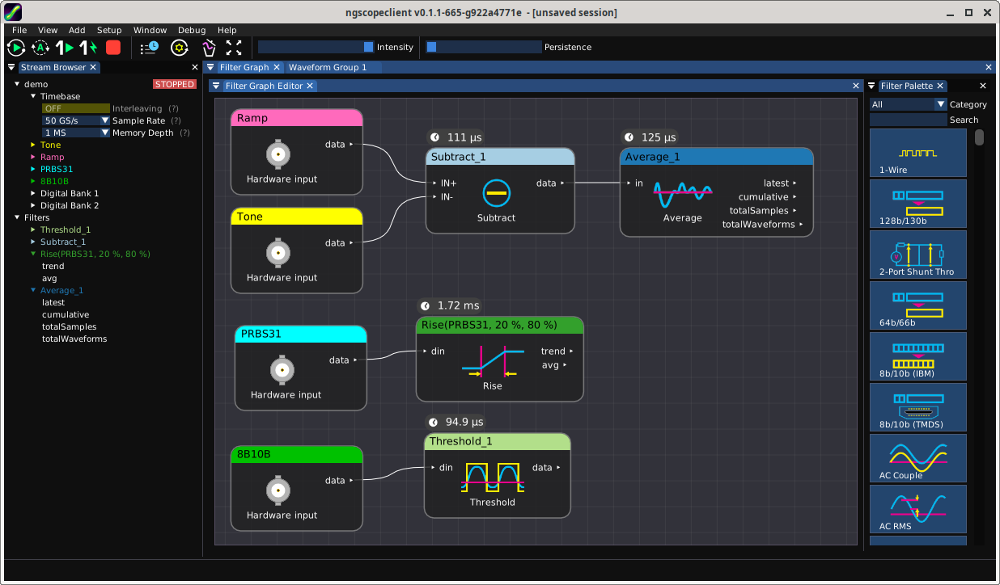
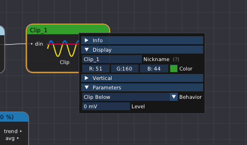
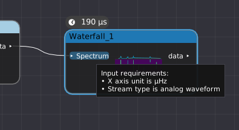
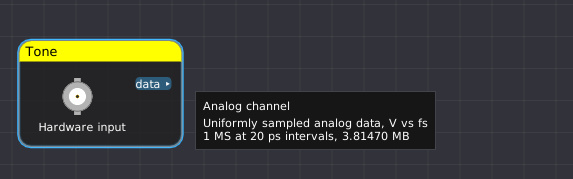
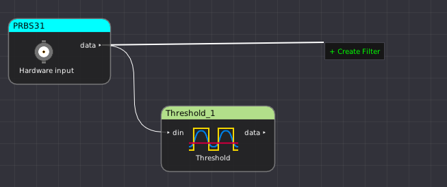
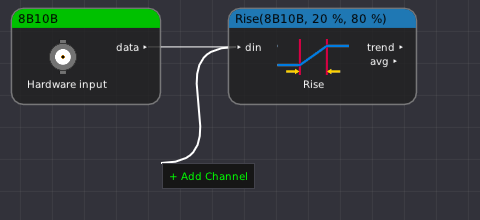
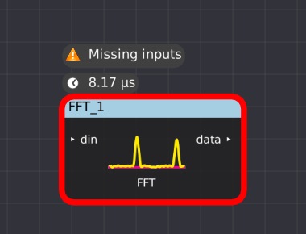
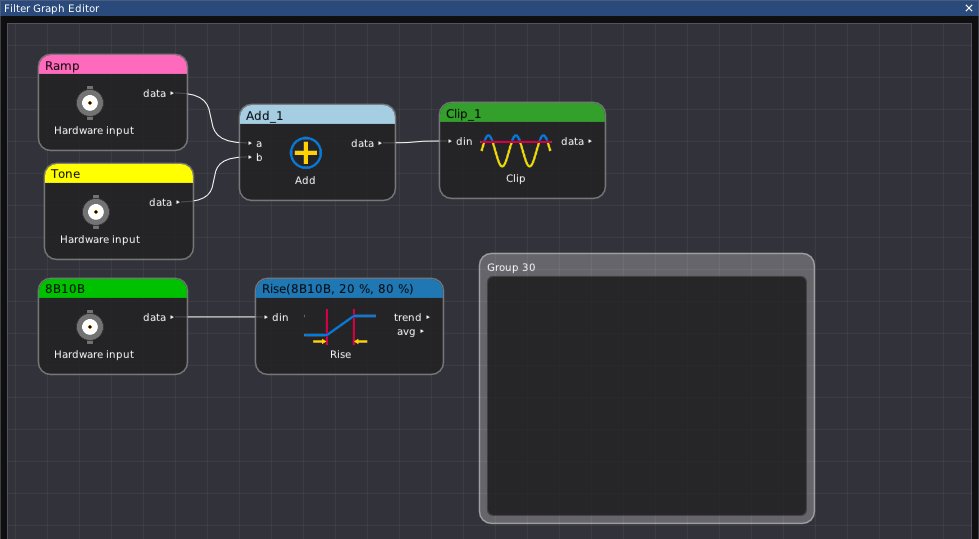
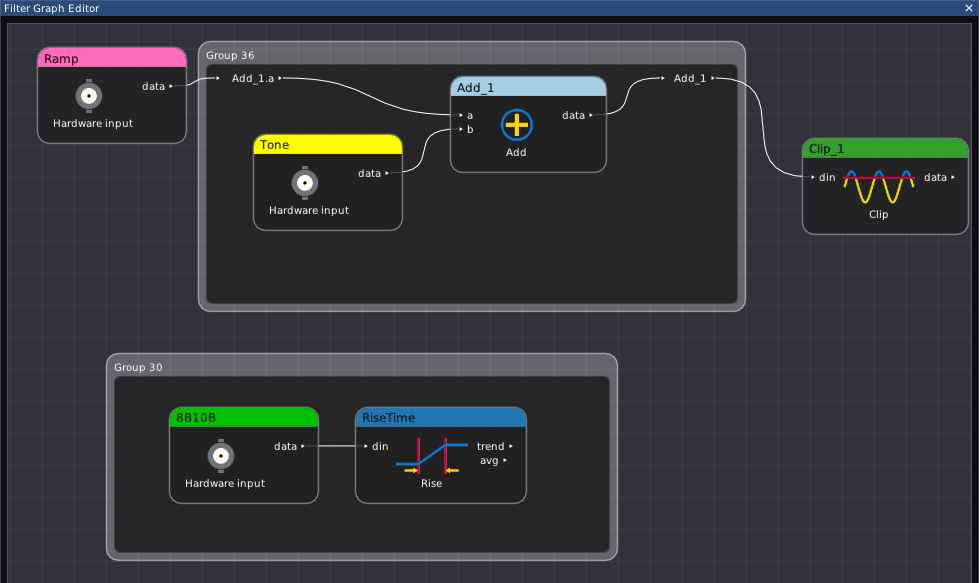

The filter graph editor allows complex signal processing pipelines to be developed in a graphical fashion and is the first window created automatically in a new session. It may be reopened from the Window | Filter Graph menu item if closed.
The graph editor view (Fig. 12.1) shows nodes for every instrument channel, trigger, and filter block used in the current session. Additional nodes for inactive channels may be created by dragging them from the stream browser into the graph editor canvas.
Nodes cannot overlap and will automatically move out of the way if another node is dragged on top of them.

The view may be zoomed with the mouse wheel, or panned by dragging with the right mouse button, to navigate large filter graphs which do not fit on a single screen at a reasonable zoom level. Right clicking on a node opens a pop-up properties view (Fig. 12.2).

Nodes display inputs at left and outputs at right. To connect two existing nodes, click on an input or output port and drag to the port you wish to connect it to. An input can only connect to one output at a time; if the destination already is connected to a different signal the previous connection will be removed and replaced with the new one.
A tooltip with a green plus sign is displayed during dragging if the proposed connection is valid. If the tooltip displays a red X instead, the connection is invalid (connecting two inputs, two outputs, or an input and output of incompatible data types).
Hovering the mouse over an input port displays a tooltip showing what inputs are allowed to be connected to the port (Fig. 12.3). Typical restrictions include accepting only analog or only digital input, only sparse or only uniform sampling, specific X or Y axis units, or a particular protocol data type.
Hovering the mouse over an output port displays a tooltip describing the data provided by that stream (Fig. 12.4). Exact data available depends on the type of waveform (analog, digital, protocol, density plot, etc) but typically includes units, sample rate, number of points, and memory used.


To create a new node, click on an input or output port and drag to an empty area of the canvas (Fig. 12.5, Fig. 12.6). A context menu will appear, presenting a list of filters which can accept (if dragging from an output) or produce (if dragging from an input) the desired data type. If dragging from an input, the context menu will also include any currently unused instrument channels.


When a new node is added to the filter graph, each output channel will be automatically added to an existing waveform view if a compatible one is present. If no compatible view is available, a new view and/or group will be created.
Node title bars are color-coded to match the display color of the waveform trace, allowing easy navigation between waveform views and the graph editor.
Each node also includes a caption stating the type of node (“hardware input", “hardware output", or the name of the filter block) and, in most cases, an icon depicting the functionality of the block.1
If a filter is missing required inputs, has a nonsensical configuration such as dividing by zero, or is otherwise unable to generate a valid output the node will be outlined in red (Fig. 12.7) and a brief one-line description of the error will be displayed above the node. More details can be found in the errors list window, which docks to the bottom of the graph editor by default but can be dragged and moved like any other window. (The error list is hidden automatically when there are no errors, to save screen space)

In order to better organize complex experimental setups, nodes may be organized in groups. Groups cannot be nested.
To create a group, right click an unused area of the graph editor canvas and select “New Group" from the context menu. This will spawn a new, empty group near the mouse cursor position.
The group will have an automatically generated name (Fig. 12.8) by default. This name may be changed by right clicking on the group’s title bar and typing a new name in the pop-up.

To add a node to a group, simply drag the node by its title bar and move it into the group (Fig. 12.9). All paths from the node to the remainder of the filter graph will be routed through “hierarchical ports" at the left and right edges of the group, reducing clutter. Nodes may be freely moved around within the group to organize them, or dragged out of the group to remove them from the group.
A group (together with its contents) may be moved by dragging the group’s title bar with the left mouse button, or resized by dragging any of its corners. When a group is moved, it will push other nodes or groups out of the way to prevent overlapping.
If not needed, a group can be deleted by selecting it with the left mouse button and pressing the “delete" key. Deleting a group does not remove any nodes contained within it.

A clock icon displayed above filter nodes shows the execution time of the block, which can be used to help identify the reason for slowdowns in complex filter graphs.
The workload scheduler tries to batch multiple nodes when possible and send them to the GPU as a single unit to reduce CPU-GPU round trip overhead. When this occurs, all nodes in the batch will show the same execution time and it is not possible to use the graph view to determine which one is the bottleneck.
If you are a developer trying to optimize a specific filter block, finer grained performance data can be obtained using the appropriate profiling tool for your GPU (NVIDIA NSight Systems, AMD Radeon GPU Profiler, etc). When running under a debugger or profiler, ngscopeclient automatically adds tracking events using NVIDIA NVTX and VK_EXT_debug_utils that allow specific shaders to be easily identified in traces. automatically adds debug events
1Not all filters currently have icons. We are working with multiple artists to create more filter icons and welcome additional contributions.